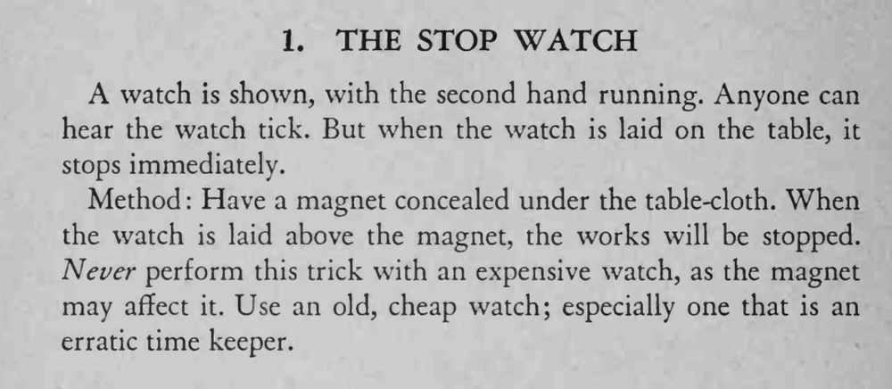

怀表在手中滴答走着，放在桌上却立刻停住。
磁铁位置要对准表，千万不要用贵重怀表冒险。

A watch is shown, with the second hand running. Anyone can hear the watch tick. But when the watch is laid on the table, it stops immediately. Method Have a magnet concealed under the table-cloth. When the watch is laid above the magnet, the works will be stopped. Never perform this trick with an expensive watch, as the magnet may affect it. Use an old, cheap watch; especially one that is an erratic time keeper.